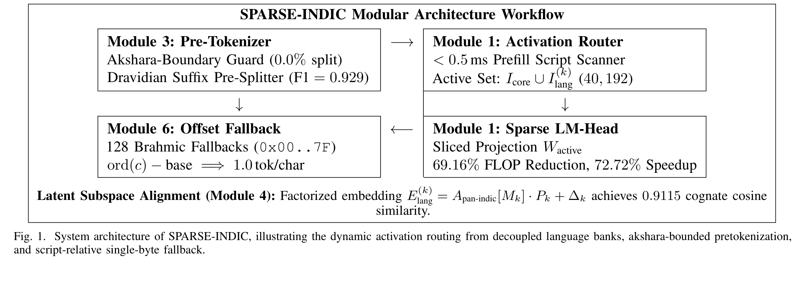

An interactive empirical audit of cross-lingual fertility, akshara boundary preservation, and active-routed vocabulary sparsity across 12 Indic languages and 13 modern tokenization paradigms.
Exposes broken akshara pathologies in conjuncts (प्रौद्योगिकी, संस्थान, विश्वविद्यालय). Standard BPE splits consonants from dependent matras, whereas SPARSE-INDIC keeps all akshara syllables intact.
The baseline tokenizer splits complex consonant conjuncts into disjoint single-byte fragments or orphaned matras. Because the language model's attention mechanism must link separated phonological units across multiple positions, semantic comprehension and downstream reasoning accuracy suffer.
SPARSE-INDIC implements an Akshara-Bounded Pretokenizer that checks Unicode Brahmic regex bounds prior to subword merges. It strictly forbids decomposing conjuncts and vowel signs, ensuring 0.0000% split syllables and enabling near-unity parity (1.10×).
| Tokenizer / Paradigm | Total Vocab | Active Vocab | FLOP Red. (%) | TPOT Speedup (%) | Mean Parity (P_L) | Indic Gini | Vocab Util (%) | Split Aksharas (%) | Morph F1 | Exact Lossless (%) | Domain Drift (%) | R_byte (%) | OOV Cost | Bytes/Tok |
|---|
nlp_paper-2.pdf

Modular workflow showing Pre-tokenizer, Akshara-Boundary Guard, Dravidian Suffix Splitter, Always-On Core (32k), 12 Language Banks (8.2k each), Two-Tier Activation Router, and Sparse LM Head.